Chapter 1: Style
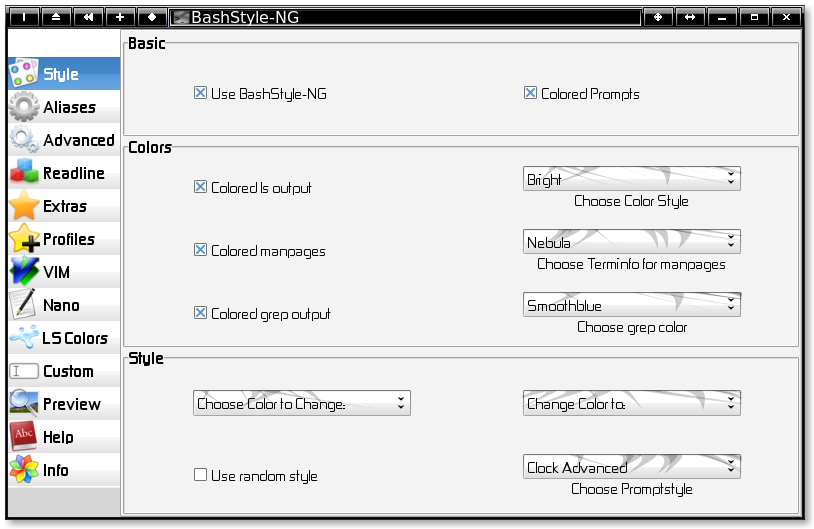
Use BashStyle-NG:
When enabled, BS-NG is used to manage your bashs configuration.
Colored Prompts:
When enabled, BS-NG creates colorfull prompts, else, or if on the
linux-console, monochrome prompts are used.
Colored ls output:
When enabled, ls colors it's output according to $LS_COLORS.
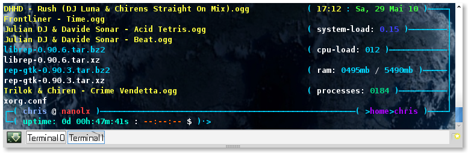
Change Color Style:
Choose the way colors are drawn:
| Normal |
example |
| Bold |
example |
| Dimmed |
example |
| Inverted |
example |
| Underlined |
example |
Colored Manpages:
When enabled, BS-NG uses a special terminfofile, to give you colored manpages
Terminfo for Manpages:
Choose which terminfofile to use for coloring manpages:
Terminfo: Mostlike
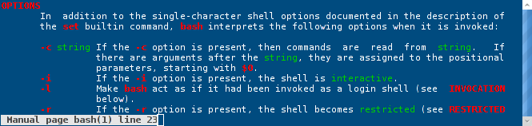
Terminfo: Bold
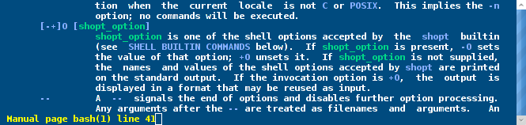
Terminfo: Nebula
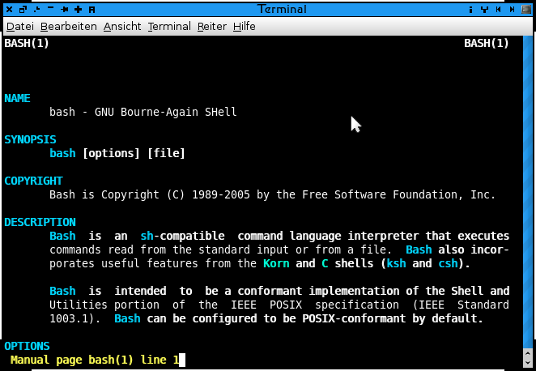
Colored grep output:
When enabled, grep colors it's output.
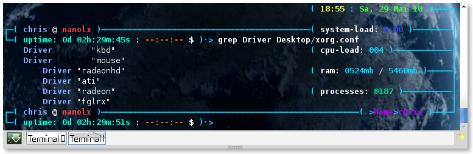
Choose Grep Color:
Choose the color for matching words in greps output.
Choose Color to Change/Change Color to:
Choose a part of the prompt and change it's color.
This works with all shipped styles, and with all custom-defined ones,
that use symbolic-colors, e.g. $usercolor instead of $blue
Use random style:
When enabled, BS-NG chooses a random style on each startup.
Reload Terminal:
Press this to restart the terminal to immediately test changes.
Choose Style:
Choose what style to use for your Bashprompt
Available Styles:
Separator [This Style has Options on the `Extras' Page]
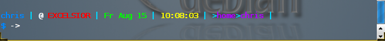
Vector
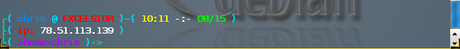
Floating Clock
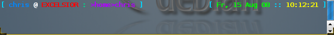
Clock-Advanced
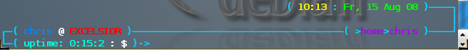
Dash
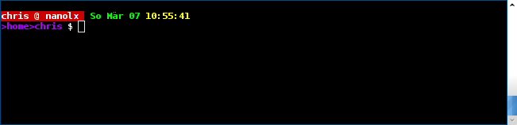
Job
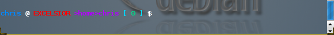
Elite
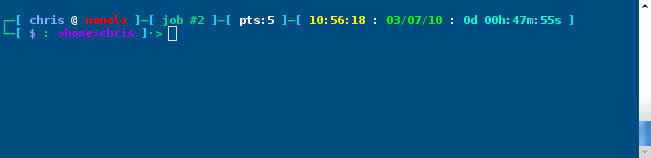
Poweruser
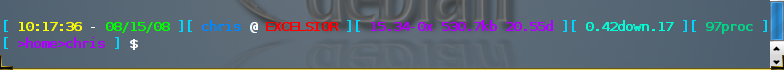
Dirks
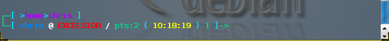
Minimal
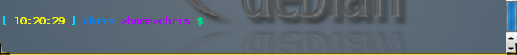
Dot.Prompt
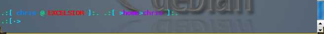
Bracket
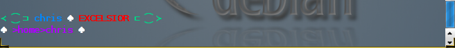
Sepa-NG
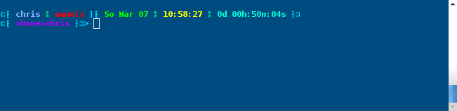
Quirk
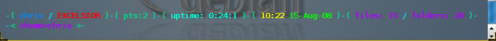
Sputnik
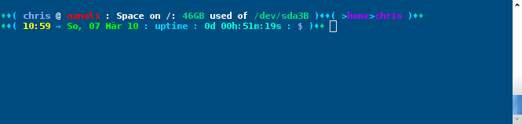